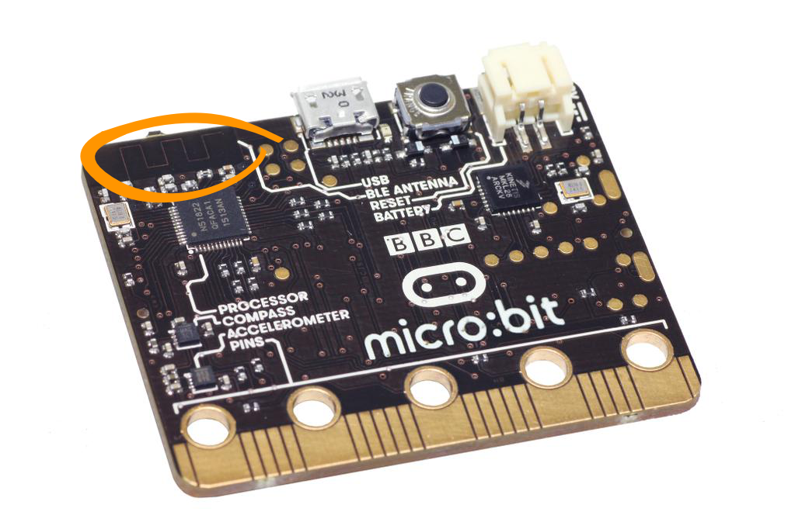

Radio¶
Micro:bit has a Bluetooth Lowe Energy (BLE) antenna that can be used to transmit and receive messages.
{kind=link}
Basic Functions¶
Getting ready¶
Before you can use the radio you must remember to import the radio module and to turn the radio on. Once the radio is on, it will be able to receive messages from
any other micro:bit within range:
from microbit import *
import radio
radio.on()
Setting a channel number¶
If you only want share messages within a group of devices then each micro:bit in the group must be configured to share the same channel number. The channel number must
be a number between 0 and 100:
# Set the channel number to 19
radio.config(channel=19)
It is important to do this if you are in a room with other people using their micro:bits because otherwise your micro:bit will overhear all the messages nearby and that is not what you usually want.
Setting the power level¶
Finally, you should set the power level for the radio. By default, your micro:bit will be transmitting on power level 0 which means that your messages won’t get
transmitted very far. The power level can be a value between 0 and 7:
# Set the power level to 7
radio.config(power=7)
Sending and receiving a message¶
Now you are ready to send or receive a message. You can send a string which is up to 250 characters in length in the message:
message_to_master = "Ash nazg durbatulûk, ash nazg gimbatul, ash nazg thrakatulûk, agh burzum-ishi krimpatul."
radio.send(message_to_master)
Receiving a message:
message_received = radio.receive()
Putting it together¶
from microbit import *
import radio
radio.on()
radio.config(channel=19) # Choose your own channel number
radio.config(power=7) # Turn the signal up to full strength
message_to_master = "Ash nazg durbatulûk, ash nazg gimbatul, ash nazg thrakatulûk, agh burzum-ishi krimpatul."
# Event loop.
while True:
radio.send(message_to_master)
incoming = radio.receive()
if incoming is not None:
display.show(incoming)
print(incoming)
sleep(500)
If you print the incoming message, you will see that sometimes it contains the value None. That is because sometimes the micro:bit checks for a message but nothing
has arrived. We can ignore these non-events by checking whether incoming equals None and ignoring it if that is the case.
Interfacing With Your Phone¶
Using the microbit Bluetooth antenna, it’s possible to connect your micro:bit to your phone and interact with micro:bit wirelessly. However, MicroPython does not support this capability due to lack of RAM capacity.
Practice questions¶
Send a message every time button
Ais pressed.You will need a pair of micro:bits. Program one micro:bit to receive messages and print the message received using the
print()method. Leave this micro:bit plugged into your computer with a USB cable. Program the other micro:bit to send accelerometer readings or the temperature readings in messages every second. Unplug this micro:bit and use a battery pack to power it. Congratulations! you have created a data logger!